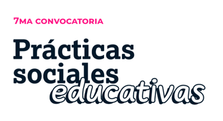

Emprender e Innovar · 2026
PSE · Escuela Albergue Raíces Huarpes N° 4-207 · Lavalle, Mendoza

Inicio
La Escuela
Proyectos
▾
Proyecto de Turismo
Proyecto de Cosmética
Galería
Conclusiones y directrices
Equipo y contacto
Menú